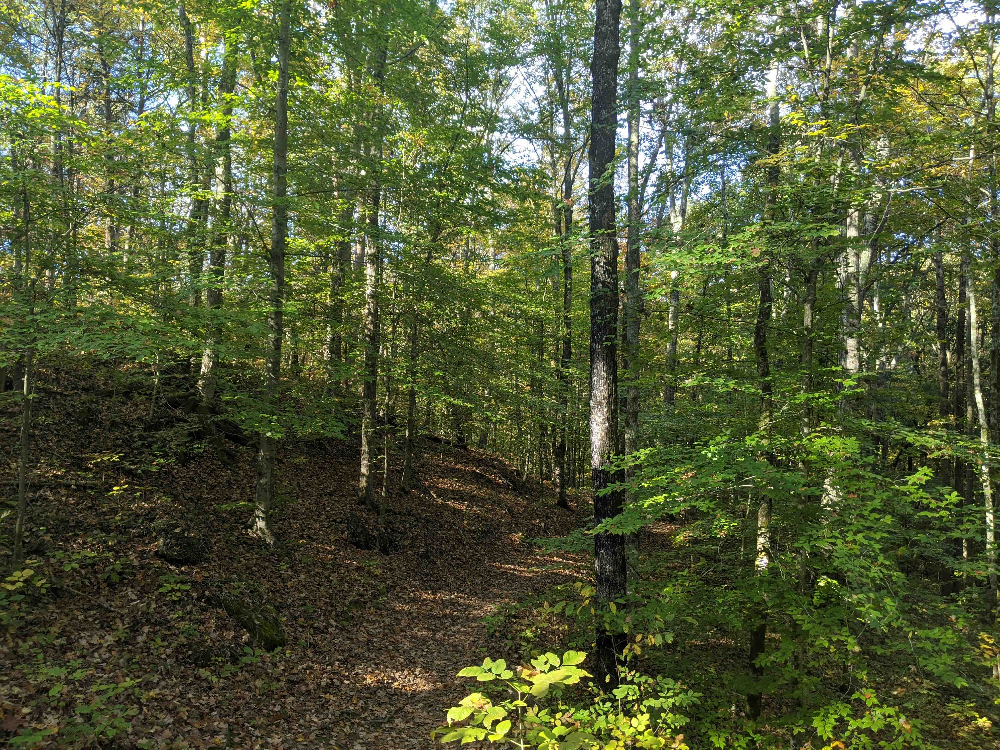
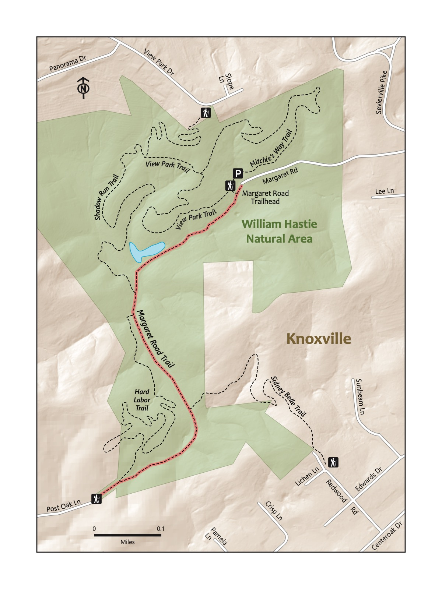

Trail 9: William Hastie
Overview
A short walk on a gravel path through deep woods. The start features a beginner’s mountain bike loop on a smooth path; consider bringing kids’ bikes. Though short, this hike takes you by many spur trails; consider this a gentle introduction to a trail system close to but more rustic than Ijams. Good for all toddling and walking kids and their families.

Key Characteristics
| Trail Name | William Hastie |
|---|---|
| Region | Knoxville and Surroundings |
| Trail # | 9 |
| Time Estimate - Hiking Fast | 0.5 hours |
| Time Estimate - Hiking Slowly | 1 hour |
| Trail Distance (Miles) | 1.3 |
| Elevation Change | Flat |
| Pets | Allowed on leash |
| Parking Pass/Entrance Fee | Not Required |
| Restroom(s) | No |
| Terrain | Gravel path |

Directions to the Trailhead
Trailhead Address: William Hastie Natural Area, 1302 Margaret Rd, Knoxville, TN 37920 Trailhead GPS Coordinates: 35.93464, -83.87455
The above address will direct you to a large, rarely-busy parking area and a nice trailhead with a picnic area. Several trails start from this trailhead. Look for a sign for the Margaret Road Trail.
Trail Description
| Distance from Start | Description |
|---|---|
| 0.0 | Start on the Margaret Road Trail. |
| 0.2 | Small pond on the right. Look for turtles! |
| 0.25 | Shadow Run Trail on the right. |
| 0.65 | Reach the Post Oak Ln. Trailhead and turn around. |
| 1.30 | Traihead. |
Nearby
- Biking on the kids’ loop. The “green” mountain biking trail, Springarn, is a great spot for kids to begin to learn to ride on trails. It’s only 0.6 miles and is a nice complement to this hike.
- Exploring some of the many other trails. William Hastie Natural Area features a ton of other trails. Consider taking Mitchie’s Way from near the parking area — and then looping back to Margaret Road and the start on the trail of your choice.